Awazxane invites musicians, composers, and enthusiasts to contribute to our archive by submitting personal notations of Kurdish compositions or folk melodies from related traditions.
This collaborative space encourages community-driven growth, allowing shared works to inspire both preservation and innovation. By connecting contributions with a global audience dedicated to cultural heritage, we aim to foster a rich exchange of ideas and creativity.
